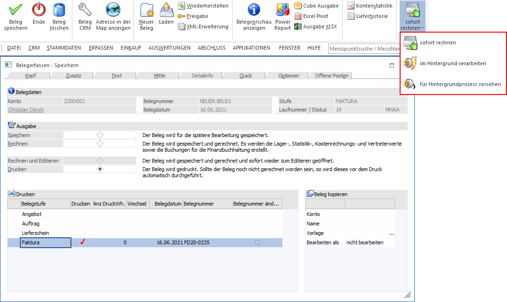
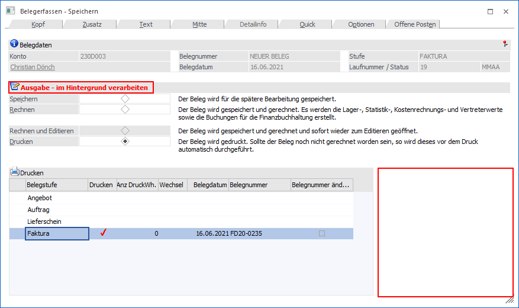
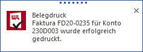
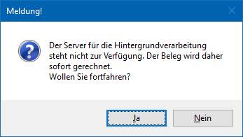
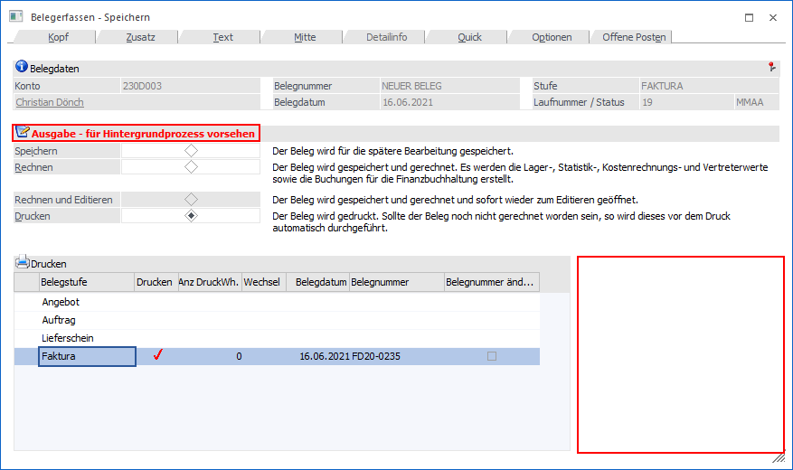
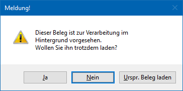

Im Bereich "Speichern" der Belegerfassung (ohne und mit individueller Vorlage) bzw. im Menüpunkt "Barrechnungen" gibt es den Auswahlbutton "sofort rechnen". Wenn dieser angewählt wird, können verschiedene Optionen gewählt werden, was mit dem Beleg beim Belegdruck passieren soll.
Hinweis
Damit der Belegdruck als Hintergrundprozess funktioniert, muss eine aufrechte Verbindung zum WinLine Server bestehen.

Ø Sofort rechnen
Der Beleg wird, wie gewohnt, direkt innerhalb der WinLine gedruckt. Diese Einstellung ist grundsätzlich aktiv, wenn zuvor keine andere Einstellung des Buttons ausgewählt wurde (Standardeinstellung).
Ø im Hintergrund verarbeiten
Wenn diese Option aktiviert ist, wird der Beleg nicht direkt innerhalb der WinLine gedruckt, sondern der Belegdruck wird als Hintergrundprozess an den WinLine Server übergeben. Dieses hat den Vorteil, dass direkt weitergearbeitet werden kann.
Damit diese Option verwendet werden kann muss allerdings eine aufrechte Verbindung zum WinLine Server bestehen. Des Weiteren ist zu beachten, dass die Funktion "Beleg kopieren" in solch einem Fall nicht zur Verfügung steht.
Beispiel
Zunächst ist im Fenster "Belegerfassen - Speichern" direkt ersichtlich, dass die Option aktiviert wurde:

Bei Anwahl des Buttons "Beleg speichern" bzw. der Taste F5 erscheint zunächst eine Meldung im unteren Bereich des Bildschirms, dass der Beleg im Hintergrund verarbeitet wird:
Die Belegerfassung ist damit sofort wieder zur Bearbeitung freigegeben. Wenn der Beleg anschließend fertig gedruckt wurde, erscheint wiederum eine dementsprechende Meldung:

Hinweis
Sollte diese Option gewählt worden sein und der WinLine Server läuft nicht bzw. ist nicht erreichbar, so erscheint die folgende Meldung:

ü Ja
Der Beleg wird nicht im
Hintergrund sondern innerhalb der WinLine gedruckt.
ü Nein
Das Meldungsfenster wird
geschlossen um man landet wieder im vorherigen Menüpunkt.
Ø für Hintergrundprozess vorsehen
Wenn ein Beleg nicht direkt gedruckt werden soll, kann dieser für einen nachträglichen Hintergrunddruck vorgesehen werden. Belege, welche mit dieser Option "gedruckt" werden, werden im eigenen Menüpunkt Hintergrundprozesse abgestellt und können zu einem späteren Zeitpunkt gedruckt werden. Die Belegerfassung ist damit sofort wieder zur weiteren Bearbeitung freigegeben.
Zu beachten ist hierbei, dass die Funktion "Beleg kopieren" in solch einem Fall nicht zur Verfügung steht.
Beispiel
Zunächst ist im Fenster "Belegerfassen - Speichern" direkt ersichtlich, dass die Option aktiviert wurde:

Wenn ein für den Hintergrunddruck vorgesehener Beleg geladen wird, erscheint eine Meldung, dass dieser für den Hintergrund vorgesehen ist:

ü Ja
Der Beleg wird geöffnet und
kann bearbeitet und anschließend direkt ausgedruckt oder wieder für den
Hintergrunddruck vorgesehen werden.
ü Nein
Man gelangt wieder zurück
in den zuvor geöffnet Menüpunkt, aus welchen der Beleg geladen wurde.
ü Urspr. Beleg laden
Wenn der
Beleg bereits einmal tatsächlich gedruckt wurde und anschließende Änderungen für
den Hintergrunddruck vorgesehen wurden, kann der damals tatsächlich gedruckt
Beleg geladen werden.
Allgemeine Hinweise
Die Belegkopfzeilen und Belegmittezeilen werden für im Hintergrund vorgesehenen Belege in den Tabellen T145 (Kopf) und T146 (Mitte) gespeichert. Nach erfolgreichem Druck des Belegs sind die Zeilen wie gewohnt in der T025 und T026 enthalten und werden aus den Tabellen T145 und T146 gelöscht.
Wenn eine Tabellenerweiterung auf die T025 und T026 vorhanden ist, müssen die T145 und T146 ebenfalls manuell diesbezüglich angepasst werden.
Belege, die für den Hintergrundprozess vorgesehen sind erhalten ein Kennzeichen, dass sie noch verarbeitet werden müssen und sind damit in folgenden Menüpunkten gesperrt (d.h. sie können dort nicht bearbeitet werden bzw. werden nicht angezeigt):
ü Belegstorno
ü Stapeldruck (Menüpunkt Belege drucken)
ü Beleg splitten
ü Mehrfachaufteilung
ü Kommissionierung
ü Belegumstellung
ü Lieferantenlieferschein bearbeiten
ü Kundenbestellungen bearbeiten
ü Kundenlieferscheine drucken
ü Packlistendruck
ü Sammelfakturendruck
ü Lieferantenlieferungen bearbeiten
ü Projektbearbeitung
ü Batchbeleg (Import von Lieferschein zu Aufträgen, Import von Rechnungen zu Lieferscheinen, Bearbeiten von bestehenden Belegen)
ü Batcherfassung von Belegen (Bearbeiten von bestehenden Belegen)
ü Zahlungen erfassen
ü Belegmanagement (Dokument hinzufügen und Beleg-CRM-Button sind nicht aktiv)
ü Belege (Dokument hinzufügen und Beleg-CRM-Button sind nicht aktiv)
ü Freigabe (Menüpunkt im WinLine START)
ü Belege reorganisieren
ü externe Lagerbuchung (Kommissionierung)
ü WinLine PPS - Endmeldung (Liefermengen in verknüpftem Beleg aktualisieren)
ü WinLine PPS - Schnellendmeldung (Liefermengen in verknüpftem Beleg aktualisieren)
ü WinLine PPS - Tätigkeiten einplanen & Auftragsinfo (Lieferdatum in verknüpftem Beleg aktualisieren)
ü WinLine PPS - Webservice mit Endmeldung (Liefermengen in verknüpftem Beleg aktualisieren)
ü WinLine PPS - Produktionsauftrag einlesen (Produktionsauftragsnummer in verknüpftem Beleg aktualisieren)